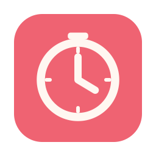
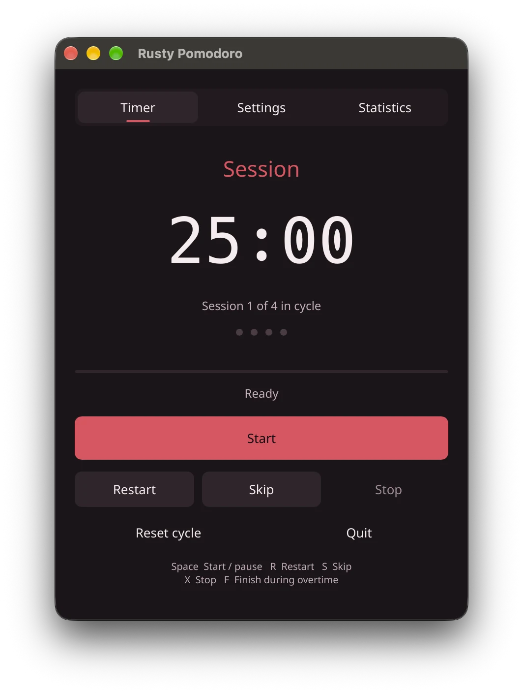

A rhythm you can return to.
Move between focus sessions, short breaks, and a longer rest. Set the durations and cycle length to match the way you work.

Rusty PomodoroA little structure. A lot more focus.
Rusty Pomodoro is a desktop timer that helps you settle into work—and remember to step away.
100% Rust desktop app. No Tauri. No WebView. Open source.

Not another place to manage your work.
A small companion for actually doing it.
Move between focus sessions, short breaks, and a longer rest. Set the durations and cycle length to match the way you work.
Choose from five accent themes. Adjust timer behavior and use keyboard shortcuts to stay in your flow.
Review today's focus and your last seven days. Export your history as CSV when you want to look a little closer.
The desktop app runs compiled Rust with a software-rendered Slint interface or native macOS AppKit controlled by Rust. No Tauri, no WebView, and no HTML or JavaScript app runtime.
The timer, your preferences, and your focus history. A straightforward interface that keeps the work in front of you.
Focus and break controls in one place.
Pick a task. Give it your attention. Step away for a moment. Come back with a little more room to think.
Try the rhythm here. This browser demo doesn't save sessions or run the desktop app.
25 minutes of focus. One place to start.
Free to install. Open to explore.
Get the desktop app, or build it your way.
Install the app shown on this page with Homebrew. The cask selects the Apple Silicon or Intel build for your Mac. No Rust toolchain or source build is needed.
brew tap AungMyoKyaw/homebrew-tap
brew install --cask rusty-pomodoromacOS 11 or later. Installs Rusty Pomodoro Slint.app. Ad-hoc signed, not Developer ID signed or notarized; the cask removes quarantine during installation. Update with brew upgrade --cask rusty-pomodoro.
A native macOS interface, with menu-bar controls, sounds, global shortcuts, and sleep/wake support.
make package-macos
open "dist/Rusty Pomodoro.app"Local bundles are ad-hoc signed, not notarized.
The interface shown on this page. Build for macOS, Windows, or Linux using the shared Rust timer engine.
cargo run --locked --release \
--features slint-ui \
--bin rusty-pomodoro-slintWindows and Linux builds exist; runtime is not yet tested. macOS-only system integrations are not available there.
Prefer a direct download? Get packaged builds for macOS, Windows, and Linux from GitHub Releases. Building from source requires the repository and a Rust toolchain.
No. Rusty Pomodoro runs on your desktop. The timer on this website is a small demonstration, not a replacement for the app.
The app stores settings and session history locally. The desktop app doesn't require an account. This website uses no analytics or tracking scripts.
Yes. Focus duration, short and long breaks, and sessions per cycle are configurable in Settings. The website demo uses example durations.
Yes. The code is available under AGPL-3.0-or-later. Read the license, build it yourself, or contribute on GitHub.